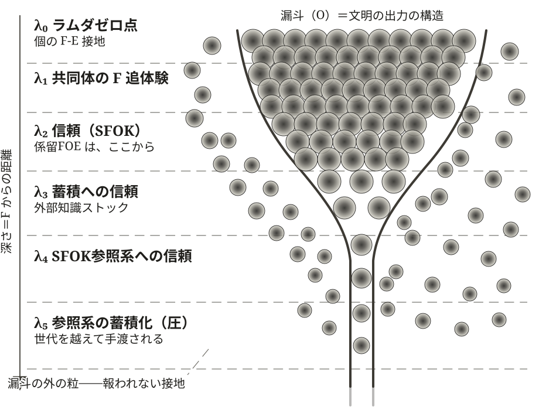
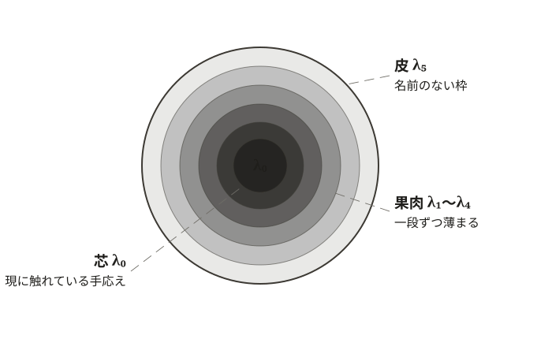
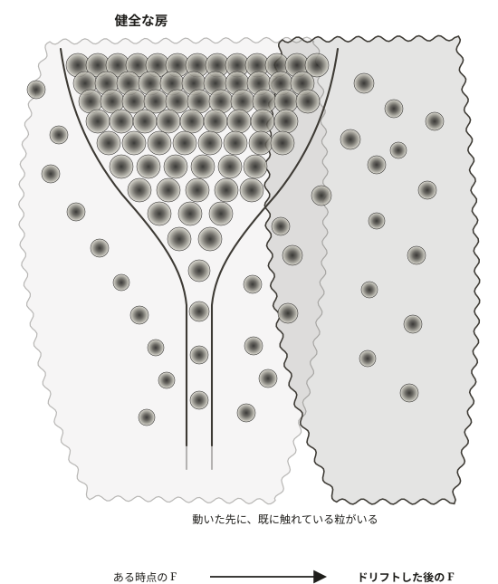
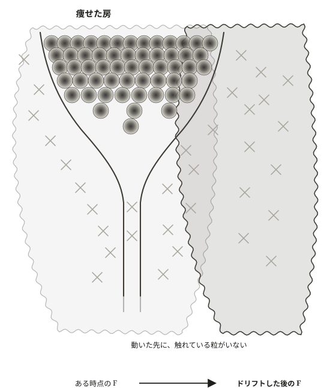
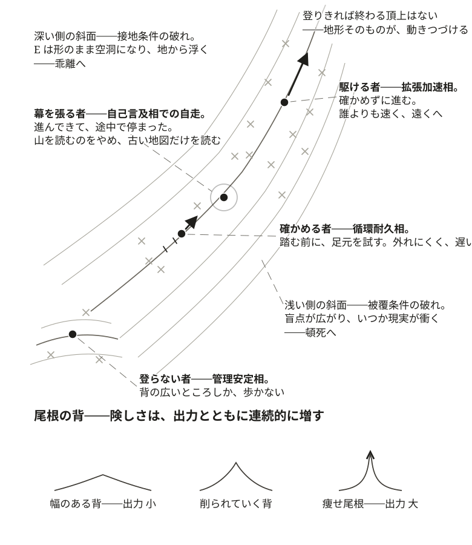
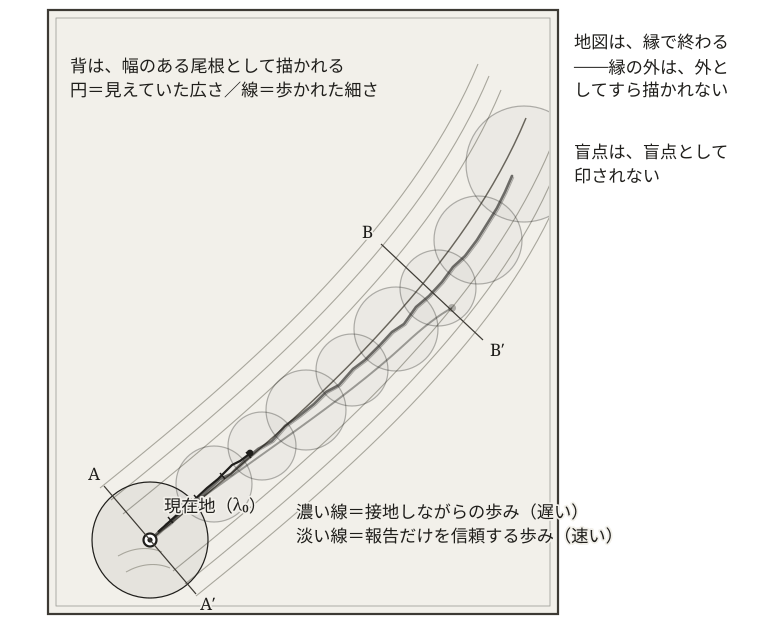
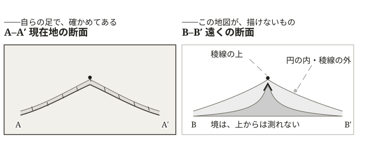
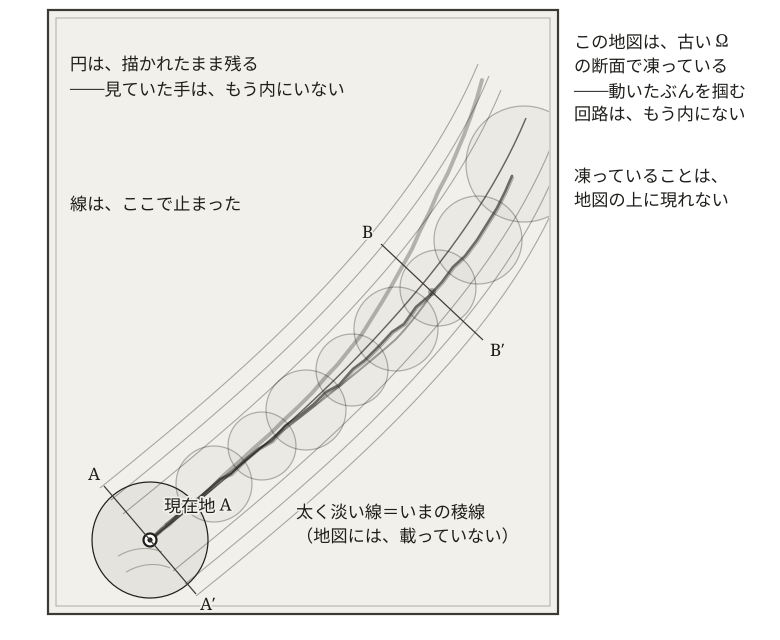
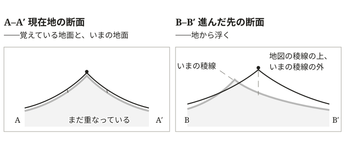

第24章 どこまでが「我ら」か——引受の不等式へのバインド
「我ら」を、どの範囲で、いつまで保てるか。
『「我ら」を引き受けるとは何か』（第23章）は、循環耐久相を引き受けるとはどういうことかを、労働として、先見の苦悩として、二重の支払いとして、内側から描いた。その底に残された、なお手を閉じない位置には、立場の名はあっても、そこで発される応答の名が、まだ置かれていない。「百億人の『我ら』を引き受けるとはどういうことか」という第23章の問いは、ここで、「その『我ら』を、どの範囲で、どれだけの時間、保てるのか」という問いへ進む。名は、その測量の果てで置かれる。
第Ⅳ部は、この場を重心の側から見た。操作と引受が分かれた重心が、どのセルへ滑るか——それが頓死と乖離の幾何であった。第Ⅴ部は、同じ場を被覆の側から見る。「実存的我ら」（E）が、「操作能力的我ら」（O）をどこまで覆いうるか。重心がどこへ落ちるかではなく、覆いがどこまで届くか——視点を裏返したところに、循環耐久相を内側から成立させる条件が立つ。
§24-1 保てる範囲の底と、バインドの落ちる深さ
質的な記述（第23章）から、何がどれだけ満たされれば成立するのか——保てる範囲の底は何で定まるのか——という構造的記述へ移る。まず、測量から始める。
保てる範囲の底は、二層である——所与の λ₀ と、係留が保つラムダ帯域
「保てる範囲の底」と一語で呼びうるものは、二つの異なるものに分かれる。分けるために、「参照されるから、存在する」（第18章）の装置を一つ、呼び戻しておく。文明の作動は、個の F と E との直接接地からの距離に応じて、段をなして積み上がっている——個が F に直接触れる段から、信頼が信頼を継ぐ段へ（漏斗モデルの多段圧縮構造、第18章 §18-2）。この、選別構造が現に立ち上がっている段の全体が、ラムダ帯域（展開実現帯域 λ）である。ラムダ帯域は深さを持ち、段には浅いほうから添字が振られる——λ₀ から λ₁、λ₂ へと、F からの距離が一段ずつ離れていく。
所与とは、系の作動を要さずに定まっている性格をいう。定立とは、系の作動によって保たれる性格をいう。 保てる範囲の底は、この二つの性格に分かれる——所与の λ₀ と、係留が保つラムダ帯域の深さである。
ラムダゼロ点（λ₀） は、ラムダ帯域のいちばん浅い段であり、係留の仕事を要さずに立つ。個の主体が、生命活動を営みながら、現に F に直接接地していること——それ自体は個であって、共同体としての広がりを持たない（第19章 §19-3）。共同体としての広がりは、この点が直接接続——対面しうる範囲の紐帯——によって共有される範囲として立つ。それが錨泊FOE、文明レイヤーの媒介装置を経ずに FOE が成り立つ地である。その広がりはおおむねダンバー数の水準で頭打ちになるが、縁は鋭い境界ではなく、直接接続と媒介接続の移行帯である。錨泊FOE で立てられる出力——これが、文明が係留に依存せず自立して立てられる出力の下限に相当する。
文明が係留の仕事を払えなくなっても、個の主体が生きて F に接地しているかぎり、この地は残る。剥落はここで止まる。破局が起きようと起きまいと、係留なしに立つ地であることは定まっている——所与にして、絶対である。
ただし、所与なのはこの段の性格であって、地の豊かさではない。この地で立てられる出力は、森林・農地・地表近くの鉱物といった起動条件（第23章 §23-1）の残高に依存する。剥落はつねにこの地で止まるが、止まった次に立てられるものは、以前と同じものであるかどうかはわからない。
ラムダ帯域の深さは、係留の継続によって存立する。ダンバー数を超えて「我ら」を束ねるには、「実存的我ら」（E）の媒介接続が要る。その媒介を係留で地に保ち、重心が FOE にとどまるとき、係留FOE が成り立つ。広がりに定義的な上限はない。原理的には、どこまでも広く、どこまでも深く。だが、保つ仕事が止めば、媒介接続は地から剥がれ、ラムダ帯域は λ₀ まで剥落する。係留の仕事が続くかぎりでのみ保たれる——定立にして、相対である。
二つは別の存在論を持つ。λ₀ は性格として定まっている所与であり、ラムダ帯域の深さは係留の作動として保たれる動的な定立である。添字の 0 が、この非対称を運ぶ——λ₀ だけが、保つ仕事を要さない。
百億・千年の「我ら」は係留FOE にしか実現されない——その深さは λ₄・λ₅ に及ぶ
では、第Ⅴ部のバインド——百億人の「我ら」へ、千年後の「我ら」へ——は、「文明の出力の幾何」（第17章）の漏斗のどの深さに実現されるか。
λ₀ は個の F-E 接地であり、その共有はダンバー数の水準で頭打ちになる。直接接続が届く範囲の外までは、構造上届かない。百億は、互いに顔を合わせる範囲では到底ない。千年は、一人の生涯の時間スケールでは到底ない。百億・千年の「我ら」は、上限のない係留FOE にしか実現されない——λ₂ 以深、信頼の連鎖のラムダ帯域である。
しかも、この規模と時間は、λ₃——蓄積そのものへの信頼——でも足りない。百億の作動を束ねる蓄積は、どの参加者にとっても参照臨界（「知識の重さ」第9章）の向こうにある。それに触れる参照は、SFOK参照系（第18章 §18-2、λ₄）を経由するほかない。百億人の「我ら」は、λ₄ を構成的に通る。
千年は、その参照系自体を世代を越えて手渡すこと——参照系の蓄積化（λ₅ の圧）——まで要求する。規模と時間の代価は、深さである。
そして深さは、ただの距離ではない。λ₄ には、固有の機構が二つ働いている。参照の実務がすべて参照系を経由するため、参照系に載らないものは「参照されていないもの」ではなく「存在しないもの」として扱われる——参照系の縁と Ω の縁の同一視（命題 FUNNEL-3、第18章 §18-3）。そして、フィードバックの終端が F から参照系へ移り、供給が参照系の基準へ最適化されていく——捕獲（命題 FUNNEL-5、第18章 §18-3）。百億・千年の「我ら」が λ₄ を構成的に通るとは、成立条件がこの二つの機構の内側で満たされねばならなくなる、ということである。
すなわち、百億・千年を引き受けるとは、ラムダ帯域をその深さで保つ仕事を引き受けることである。係留FOE は係留の継続にのみ存立するから、この引き受けは、ある一時点での達成ではなく、時間を通じて続けられる作動として要請される。「報われない労働」の正体は、ここにある——大きな「我ら」は、絶えず係留されつづけているラムダ帯域のうえにしか、乗れない。手を止めれば、そのラムダ帯域は地から剥がれる。
ただし、このラムダ帯域の深さは、「操作能力的我ら」（O）の広がりが課す要求でもある。もはや手放せない前提として広がった操作能力の上に、すでに動いている百億の命が乗っている。引受の不等式——「操作能力的我ら」（O）≤「実存的我ら」（E）——を成立側に保つには、「実存的我ら」（E）の被覆が、この操作能力の広がりまで届かねばならない。
原型の不等式のもとでは維持の道は二つあった——「操作能力的我ら」（O）を縮小するか、「実存的我ら」（E）を拡大するか。だが「操作能力的我ら」は、いま乗っている命の数より下へは縮められない。残る道は、ラムダ帯域のその深さで「実存的我ら」（E）の被覆を保つ、ただ一つである。
深さに、誰が生きているか——房と漏斗
この深さの全体を、俯瞰しておく。ラムダ帯域の各段は、抽象的な層ではない——それぞれの深さの対象に、現に接地して働く一人ひとりの主体がいる。一つの比喩を置く。この分布は、漏斗に盛られた葡萄の房である。一粒が、一人の主体とその接地である。浅い段は厚い——生活の F に直接触れる無数の手（λ₀）、語りと追体験の共同体（λ₁）、顔を知る者どうしの信頼（λ₂）。ここでは粒が密に重なり合って、房をなす。媒介接続とは、粒と粒の重なりのことである。段が深まるほど粒は少なく、離れて、孤立していく——蓄積を自分で読み、彫り直す者（λ₃）、参照系そのものに触れて保守する者（λ₄・λ₅）。深い段の一粒は、房の賑わいから遠く、細い管の中で、その段の F に一人で触れている。
一粒を取り出して、割ってみる。どの粒の内にも、同じ層がある。芯には、自分の手が現に触れている手応え——その人の λ₀——がある。芯を包む果肉は、追体験と、信頼と、読める記述と、使っている参照系——λ₁ から λ₄ までの、質感が一段ずつ薄まっていく厚みである。いちばん外の皮は、誰が置いたのかも知らないまま生の形を決めている、名前のない枠——λ₅ である。深さは、文明の構造であると同時に、一人ひとりの内側の層でもある。どの粒も同じ層を持ち、どの深さで接地するかだけが違う。
そして、房は漏斗の内に納まらない。いまの漏斗——現在の選別構造が汲み上げる範囲——の外側にも、粒は散っている。報酬関数では報われないまま、それぞれの F に触れつづけている者たちである。この外の粒が何のためにあるのかは、いまの漏斗の内側からは評価できない。その意味は、地形が動き出したとき（§24-2）に現れる。


§24-2 文明の痩せ尾根の地形——二つの構造条件と、その上の四つの位置
ラムダ帯域は、何によって保たれ、どこで外れるのか。保つ条件は二つある——被覆条件と接地条件（「どの規模まで、保てるか」第19章 §19-2）。外れる方向も二つある——漏斗の浅い側と、深い側。条件と方向は対応する。被覆条件は浅い側で破れ、接地条件は深い側で破れる。循環耐久相がとどまるのは、二つの破れに両側から挟まれた場所である——この節に地形の言葉が要るのは、そのためである。まず、被覆条件から。
ラムダ帯域を保つ条件——被覆条件
被覆条件とは、「我ら」の被覆——「実存的我ら」（E）の射程と輪郭——が、漏斗の深さに及んでいることである。文明は技術と組織と物理基盤を多段に圧縮して、漏斗を深く彫り、急峻な傾斜のうえに大きな出力を立てる。その漏斗の深さに、「実存的我ら」（E）の被覆が及んでいるかどうかが、ラムダ帯域がその深さで保たれるか、破れるかを分ける。
被覆は、範囲だけを名目的に広げても及ばない。「人類は一つ」と唱えるだけでは、被覆にならない。被覆が及ぶのは、自覚をもって行使される影響力——「実存的我ら」（E）へ向けて意識的に引き受けられる関与——を経たぶんだけである。引受の不等式が破れるのは、「実存的我ら」（E）が名目として小さいからではなく、自覚をもって及ぶ影響力が小さいからである。ティベリウスは、この自覚的な影響力が大きく、結果として漏れ出る影響は小さかった。彼の判断は帝国全土の人民の生死に及んだが、地球環境への影響は乏しかった。現代の一個人はその逆で、人間社会への自覚的な影響力は小さいが、消費と排出を通じた無自覚の影響は地球規模に及ぶ（序論 §1）。覆いを広げるとは、この自覚的な影響力の側を広げることであって、名目の範囲を唱えることではない。
被覆条件が破れたとき何が起こるか。漏斗の深さに被覆が届かない領域では、「実存的我ら」（E）の外側で操作が及ぶ。操作の論理が前景化し、操作の帰結が引き受けの外へ落ちる。作動圏の内側に、操作は及ぶが引き受けてはいない領域——盲点——が広がる。これが、引受の不等式が O > E へ破れるということの、被覆側での姿である。盲点は地形の内側にあるから、いつか現実がそこを衝く。生死にかかわるものが盲点に入ったとき、文明は Ω との接地を保てなくなる——頓死である。引受の不等式が破れたまま運動が続き、ラムダ帯域は浅い側から破れていく。
ラムダ帯域を保つ条件——接地条件
第二は、接地条件である。これは、漏斗の深部に、現に F に接地する主体——F 接地者——が「我ら」の内に生きて保たれていることである。
係留FOE は、媒介接続によって「我ら」を直接接続の範囲の外へ束ねている。各成員は、自分自身でありとあらゆる F に接地しているのではなく、別の誰かが F から得た FOE を信頼することで、間接的に自分自身が接地できる F を超えた範囲に接続している（第18章 §18-2、展開実現帯域 λ₂ 以深の構造）。だが、信頼の連鎖だけが伸びて、「我ら」の内側に現に文明の出力の源泉となっている F に直接接地している主体が一人もいなくなれば、係留FOE は、文明の出力が拠り所としている F からのフィードバックを見失う。
そのときラムダ帯域は、形だけ残って、地から剥がれる——λ₀ を内に失ったまま、深さだけが保たれる。漏斗の深部では、信頼の連鎖が自己言及相——F 由来の入力が零へ向かう極限相（第18章 §18-4）——に滑り込んでいるか否かが見えなくなり、いずれ、自系の出力を入力にして次の圧縮をする、入れ子の自己言及が回り始める。
この破れは、被覆条件の破れと形が違う。あちらでは、不等式が O > E へ「越える」——「実存的我ら」（E）の届かない外側で、操作が広がっていく。こちらには、越える動きがない。個の E と F との接地が失われることで、O ≤ E という関係そのものが、地から浮く。成立は形の上で保たれたまま、空洞になる。これが、ラムダ帯域が乖離する方向の壊れ方である。
接地条件は、自覚的な影響力では満たせない。F 接地は、伸ばす手が現に F に届くかどうかであり、届く保証は与えられない（命題 FOE-8「引受の外の不可知」、第16章 §16-6）。「我ら」の内に文明の出力を支えている F 接地者が含まれることを保つには、間接接続の階梯のどこかに、その F に現に手を伸ばす個の主体を生きて含みつづける必要がある。これは、被覆を広げることと別の作動である。
なお、λ₄ 以深では、この条件に参照系の側の半身が重なる——生きた F 接地者への参照が、SFOK参照系のうえで保たれていること（第18章 §18-3）。生きて接地する主体も、参照系から落ちれば、連鎖にとっては居ないに等しい。
地形が動くなかで保つ——再編成余地
被覆条件と接地条件は、ある一時点の関係ではない。新たな操作能力が投射されるたびに漏斗は深まり、被覆の分布は変動する。F 接地の場所も、地形の動きとともに移る。一時点で両条件が満たされていても、地形が動けば、その時点の充足だけではラムダ帯域は保てない。
そこで要るのが、再編成余地である。これは、別の実装へ組み直すために動員できる、未固定の遊びを指す。LEFFLA（「LEFFLAとLOT」第3章）が、係留FOE の係留の層に現れたフラクタルな下位の姿である。射影法のもとでの未評価領域だった LEFFLA が、ここでは媒介接続の実装の遊びとして現れる。
再編成余地が果たす機能は、継承可能な MANES の五条件（「残存と継承の違い」第14章 §14-5）のうち能動的再確認として読み返せる。漏斗の中身は「何もしなければ残る」のではなく「何もしなければ抜ける」。継承は、係留の仕事が続くかぎりで保たれる能動的な維持であって、何もせず漏斗に居つづける受動的な残存とは別物である。再編成余地とは、この能動的再確認のために、未固定のまま保たれる遊びにほかならない。
LEFFLA は、こうして本書の三つの層でフラクタルに現れる——認知の層における原型（第3章）、実装の層における再編成余地（本節）、系の層における ES の液相的な相互補完（「決して届かない領域、それでも」第26章が受ける）。いずれも、HZ の内側に保たれる未固定の余地である。ラムダ帯域を保つとは、この遊びを使い尽くさないことである。
再編成余地は、抽象的な備蓄ではない。その実体の大きな部分は、漏斗の外の粒である。いまの選別構造が汲み上げない場所で、報われないまま F に触れつづけている主体たちの散在（§24-1）が、組み直しのときに動員できる遊びの、生きた在庫にほかならない。地形が動き、F の流れがいまの漏斗の軸からずれていくとき、動いた先にすでに触れている粒がいるかどうかが、ラムダ帯域を新しい地形の上へ組み直せるかどうかを分ける。漏斗は、彫られたときの F に向いたまま残る。組み直しの手がかりは、漏斗の形の中にはなく、外の粒の中にある。
ここに、再編成余地に固有の困難がある。外の粒は、F が動く前には「無駄」としか評価できない。どの接地が次の地形で効くかは、地形が動くまで確定しないからである（LEFFLA の事前評価不能性が、ここでも貫いている）。だから、効率を求める圧力は、まずこの外の粒を刈り取る。房は、漏斗の中だけに刈り込まれ、痩せていく。刈り取られた直後には、何も起こらない——漏斗の出力は変わらず、むしろ身軽になったように見える。不在が現れるのは、地形が動いたときである。動いた先に、触れている粒がいない。


循環耐久相は、一本の尾根である
循環耐久相は、安定した平地ではない。両側に斜面を持つ、一本の尾根である——本書はこれを文明の尾根（civilizational ridge）と呼ぶ。この尾根の上にとどまるとは、何をしていることか。引受の不等式——「操作能力的我ら」（O）≤「実存的我ら」（E）——を成立側に保ちつづける労働にほかならない。「操作能力的我ら」（O）は現に広がった前提で、動かせるのは「実存的我ら」（E）の被覆であった。だから労働の内実は、「実存的我ら」（E）の被覆を、動きつづける「操作能力的我ら」（O）の広がりに追随させ、さらにそのどちらとも無関係に動く F との関係でも盲点を作らないよう、生まれても閉じ直すよう、時間を通じて保ちつづけることである。
尾根そのものは、係留FOE である。足元の地形は、止まっていない。動く地形に作動圏を合わせ、ラムダ帯域のうえで重心を係留しつづける。この労働なしには、「実存的我ら」（E）は、「操作能力的我ら」（O）に追いつけない。二つの構造条件——被覆条件と接地条件——は、この追随労働が満たすべき、引受の不等式の二つの側面である。被覆条件は「実存的我ら」（E）の射程が「操作能力的我ら」（O）の広がりに届いているかを問い、接地条件は「実存的我ら」（E）の内実が F 接地を失っていないか——形だけの「実存的我ら」（E）に痩せていないか——を問う。
二つの斜面は、この二側面のそれぞれの破れである。片側——漏斗の浅い側——へ外れれば、「実存的我ら」（E）が「操作能力的我ら」（O）の広がりに届かず、O > E の領域、すなわち行為は及ぶが引き受けてはいない領域が広がる。盲点を現実が衝く頓死。反対側——漏斗の深い側——へ外れれば、「実存的我ら」（E）は範囲としては保たれても、F 接地を失ったまま形骸として広がる。O ≤ E は形の上では成り立ちながら、その E が地から浮いている——ラムダ帯域が地から浮く乖離である。頓死と乖離は、別々の事態ではない。引受の不等式を成立側に保つ労働が、二つの方向で破れる、同じ一つの構造の破れ方である。
乖離した文明は、地から浮いている。基盤が尽きるまで、現実から浮いたまま自走しうる。なお、この乖離は、重心が FOE から外れるドリフト（命題 FOE-6、第16章 §16-5）が、二つの構造条件のうち接地条件の破れとして露わになった姿である。浅い側で被覆条件が破れ、現実が衝いて至る頓死とは、反対の進行先にあたる。
接地条件の破れには、二つの端がある。一つは、作動圏を古い Ω の断面に凍結させ、新しい足場を持たないまま回りつづける——自己言及相での自走。もう一つは、Ω とは別の足場を能動的に構築する——固有の足場作り。後者を突き詰めれば、系は、別の足場の上で新たに接地しなおすこともある。その新しい足場から見れば、それは乖離ではなく、別の尾根の上の循環耐久相である。そして前者——古い Ω に凍結し、自己言及相で回りつづける端——も、終わりきった相とは限らない。その文明が動きを停めた末に残すものを F として、別のレイヤーがそこに創発する——そういう見方も、視座を変えればありうる。「地から浮いている」とは、つねに「どの Ω から見て」の相対的な判定である。本書はここで、どちらの斜面の良し悪しも述べない。描けるのは、尾根と二つの斜面という地形だけである。
山の上の四つの位置——山は目盛りを与えない
この地形の上に、文明たちを立たせてみる。主だった位置は、四つ描ける。四つといっても、四つの立場（第23章 §23-5）の写しではない。あちらが同伴への個人の応じ方であるのに対し、ここに並ぶのは文明相の配置である。尾根を、確かめずに駆ける者がいる——拡張加速相である。一歩ごとに足元を試さないから、誰よりも速く、誰よりも遠くへ達する。この速さと到達は、見かけではない。短期の出力で他相を上回るのはこの相であり、駆けた距離のぶんだけ、操作能力は現に積み上がる。一歩ごとに背を確かめながら進む者がいる——循環耐久相である。踏む前に足元を試す。外れにくい。そのかわり遅く、駆ける者と並走すれば、距離では負ける。
登らない者がいる——麓と低い尾根に留まる、管理安定相である。背の広いところしか歩かないから、切れ落ちた縁に出会わない。頓死のリスクを最小に抑える、理に適った応答である。そのかわり出力は小さく、駆ける者が現れれば、その被覆に編入されやすい。そして、進むのをやめ、その場に幕を張る者がいる——深い側へ浮いた、自己言及相での自走である。山を読むのをやめ、古い地図だけを読み、担いできた荷を食いながら凌ぐ。荷が続くかぎり、そこは安泰である。
駆ける者を、山は罰しない。切れ落ちた背へ速さのまま踏み込むのは、たしかにこの者である。だが、それを引き起こす性質——確かめずに進む——は、この者を誰よりも遠くへ運んだ性質と、同じ一つのものである。強さと頓死は、別々の資質ではない。同じ一つの資質が、短い時間地平では優位として現れ、長い時間地平では破局として現れる。分けているのは、性質ではなく時間である。
四つの位置に、山は目盛りを与えない。駆ける者は踏み外しやすく、確かめる者は遅く、麓の者は編入されやすく、幕を張る者は荷が尽きる。それぞれの理と、それぞれの晒され方があるだけである。そして、この山に、登りきれば終わる頂上はない。地形そのものが、動きつづけるからである。どこに立つかを、地形は命じない。
この四つは、四つの立場（第23章 §23-5）と、一対一には揃っていない。ホモ・キュリオセスに対応する相は、この山にない——揺れる位置は、個人には立てても、相としては持続しないからである。相は自走の慣性を持ち、二つの引力のあいだに留まりつづけることができない。逆に、幕を張る者に対応する立場は、あちらにない。四つの立場が、手を伸ばすことへのいま現在の応じ方の類型であるのに対し、幕を張る者は、応じることをやめた後の姿だからである。写しにならないのは、ずれではない。個人の応じ方と文明相の配置は、別のものを切り取る二つの射影である。

文明の尾根から文明の痩せ尾根へ——百億と千年が背を削る
ただし、この尾根がどれほど険しいかは、文明の出力の大きさによる。険しさは、安全か危険かの二値ではない——出力とともに連続的に増していく。出力が小さく、漏斗の勾配がなだらかな段階では、両側の斜面もゆるく、尾根の背には幅がある。どちらかへ傾くことはあっても、一歩で尾根を外れる切迫はない。文明の尾根は、このとき、歩ける背をもっている。
だが、第Ⅴ部が課したバインド——百億人の「我ら」、千年後の「我ら」——のもとでは、様相が変わる。操作能力の出力が巨大化し、漏斗の勾配は急峻になる。両側の斜面は切り立ち、留まれる背は削られて、幅を失っていく。歩ける尾根は、両側が切れ落ちた痩せ尾根——文明の痩せ尾根（civilizational arête）——になる。arête とは、氷河に両側を削り取られて残る、刃のように細い稜線をいう。本書では、この二つを使い分ける。出力の小さい一般の文明相を文明の尾根、百億・千年のバインドが背を削り落とした相を文明の痩せ尾根と呼ぶ。
そして、文明の痩せ尾根で真に厄介なのは、それが痩せ尾根だと見えることではない。岩がむき出しに切れ落ちた背なら、切れ落ちているとそれと分かり、人は慎重になる。見分けを奪うのは、その岩の上にやわらかい表土が薄く乗り、あるいは雪が積もって、外からは幅のある尾根と見分けがつかなくなるときである。踏み込むまで、下が切れ落ちていることは分からない。文明の痩せ尾根も、同じ顔をしうる。バインドが勾配を急峻にして背を削っても、コストを外へ送り、未来から前借りするあいだは、表面がならされ、まだ歩ける尾根のように見える。切れ落ちた背が見えないのではない——それが、幅のある背と同じ姿をしている。連続であるがゆえに、その境は外から測れない。これが、頓死の境がなぜ見えにくいかの、認知の形である。λ₄ の深さは、この見分けの奪われ方を一段深くする。参照系の縁が Ω の縁と同一視されるとき（命題 FUNNEL-3、第18章 §18-3）、被覆の届いていない領域は、届いていない領域としてすら参照系に映らない。盲点が、盲点として数えられない。被覆条件が λ₄ で帯びる変形とは、これである。


循環耐久相を保つとは、どちらへも外れずに、この文明の痩せ尾根の上にとどまりつづけることである。しかもそれは平衡ではなく、尾根の外側へ押し出そうとする力に抵抗しつづける労働である。この労働を負ってなお手を閉じない位置——それは、『「我ら」を引き受けるとは何か』（第23章）が名を置かないまま本章へ渡した位置である。その名が立つ足場の形が、文明の痩せ尾根である。名は、本章の終わり（§24-5）で置く。とどまることだけが道ではない——背を降りて、より広い、すなわちより小さな出力の相へ移ることも、一つの選びである。
そして、文明の痩せ尾根の上にとどまる労働は、どちらへ外れることも確実には防げない。作動圏を Ω に合わせつづけても、盲点がゼロになる保証はない。F 接地者を「我ら」の内に保ちつづけても、地形の動きが速ければ間に合わないこともある。努力は、どちらの斜面へ外れることも、確率的に避けやすくするだけで、約束はしない。循環耐久相が「頓死しにくい、しかしその維持は努力でしかなく、盲点ゼロを保証しない」相であることの、正確な姿がこれである。有限の帯域が払える被覆にも係留にも、地形の全体は載らない。二つの構造条件は、帯域制限のもとでは、つねに近似としてしか満たされない。満たしつづけるとは、この近似を保ちつづけることである。
§24-3 移れるか、どこへ移るか——軌道と闘争的移行期
ラムダ帯域は、現実の地形が独立に動くなかで保たれる。地形が痩せれば、文明が接地している範囲は痩せる。痩せた範囲を、文明はどう扱うか。ここに二つの構えがある。一つは、失われた範囲を受け容れ、残った範囲で小さく立て直す構え——縮小を受け容れる。ラムダ帯域を浅く縮め、λ₀ に近い水準で立て直す方向である。もう一つは、失われた範囲を惜しみ、ラムダ帯域を元の深さで保とうとする構え——容積を保とうとする。失われていく地形のうえで、なお元の「我ら」を支える容積を保とうとする方向である。
二つの構えは、選択ではない。それは、見えている範囲の差である。知力と「実存的我ら」（E）の重なり、すなわち先見の範囲である（第23章 §23-6）。破局を、起きてから知る範囲しか持たない文明は、撃たれてから痛みを覚え、小さく立て直すほかない。破局を、起きる前から見通す範囲を持つ文明は、撃たれる前から全容を負い、抵抗する。
拡張加速相からの五つの軌道
現在の文明は、化石燃料・海洋資源・土壌・気候の安定を前借りして、いまの人口規模を支えている——拡張加速相にある。この相は、係留FOE を保つ係留の仕事を投じておらず、被覆条件と接地条件の双方を満たさないまま、「操作能力的我ら」（O）だけを拡張しつづけている。前借りで嵩上げされた現在規模は、係留FOE のうえに立っているのではなく、いずれ尽きる Stock の掘り崩しのうえに立っている。この相からの軌道は、複数ありうる。本書は五つを取り出す。
第一は、継続である。前借りと係留の放棄を、そのままつづける。係留FOE は立てない。短期の出力は他相を上回るが、長期には破局へ向かう。残る四つは、いずれもこの継続から離れる軌道であり、前段の二つの構えが、そのまま二手に分かれる。
縮小を受け容れる構えは、二つの軌道を持つ。二つを分けるのは構えではなく、縮小が制御下にあるか否かである。一方は、受け容れる縮小——出生率の低下などを通じた、計画的で漸進的な縮小である。ラムダ帯域を、λ₀ に近い深さへ計画的に縮め、その浅いラムダ帯域のうえで被覆条件と接地条件を満たす循環耐久相を組み直す。「我ら」の凝集は壊されない。地形の言葉でいえば、これは滑落ではなく、低い尾根への降路である——降りる判断には、登りつづける判断と同じ資格がある。他方は、強制される縮小——制御を失った急激な縮小である。ラムダ帯域が剥落し、文明は媒介接続を断たれて λ₀ へ強制的に帰着する。「我ら」の凝集の全面的な破壊と、加速するフィードバックを伴う。立て直しは、錨泊FOE の地のうえで、ダンバー数の水準からやり直されるほかない。しかもその地は、削られた起動条件（第23章 §23-1）のぶんだけ痩せた地である。
容積を保とうとする構えが軌道の側で取る形は、一つである。痩せていく地形のうえで、なお元の深さでラムダ帯域を保ちつづける——上限規模の賭け、未踏領域への賭けである。被覆条件と接地条件を漏斗の深さに対して満たし、再編成余地を使い尽くさないまま、係留の仕事を上限規模で継続させる。
そして第五が、この賭けと継続とのハイブリッド——時間との競争である。賭けが間に合えば循環耐久相へ、間に合わなければ、強制される縮小へ転落する。
これらの軌道を、操作能力・集合の大きさ・実存感の三軸の座標系（「ホモ・デウスとホモ・マネス」第7章）に置きなおすと、別の面が見える。継続は、実存感を縮退させたまま操作能力を拡大しつづける選別型の経路に近い。強制される縮小は、破局を経て媒介接続が断たれ、前近代の規模へ縮退する縮退型の経路にあたる。残る三つ——受け容れる縮小、上限規模の賭け、時間との競争——は、位相転換の四類型に対応物を持たない。循環耐久相へ至る、まだ歩かれていない経路である。軌道そのものは、すでにラムダ帯域の深さ（本章）で、重心の係留と乖離（第16章）で描かれてきた。三軸の座標系は、そこへ集合の大きさという軸を返す。どの射影も一つの潰し方であり、像を重ねてはじめて、経路の全体が立体になる。
競争排除がもたらす「外がない」状態
五つのうち継続が、一つの文明の内部の代価だけでは説明されない外的な圧力に支えられていることを、ここで取り出しておく。
複数の文明が同じ現実座標系のうえで並走するとき、深く掘れる文明が浅くしか掘れない文明を競争排除し、その被覆領域を編入していく（第19章 §19-4）。深掘りの立てるコストは内部では高いが、それを払って深い漏斗を立てた文明が、払わなかった文明を排除する。この帰結が、深掘りの高い立てるコストを正当化する。継続は、内部の選好だけで保たれているのではない。他文明を競争排除しながら被覆領域を拡げつづけることで、係留FOE を立てる必要そのものを未来へ先送りしている。
しかし、競争排除には終端がある。並走する他文明をすべて編入し尽くすと、被覆領域を拡げる先がなくなる——「外がない」状態である。外側がなくなったとき、継続は外部の F を伴わない深掘りへ追い込まれる。自系の Stock を入力として次の圧縮をする、入れ子の自己言及——自己言及相である（第18章 §18-4）。係留FOE は立たないまま、漏斗だけが深く彫られていく。そこで、強制される縮小への転落が、内蔵される。
上限規模の賭けは、この「外がない」状態が完成する前に、競争排除に依らない別の立て方を成立させうるか、という時間との競争として描き直せる。時間との競争が引き受けるのは、まさにこれである。
時間に追われる移行
五つのうち、時間との競争が、先見の苦悩を、軌道の側から引き受ける。上限規模の賭けは、痩せていく地形と、それを掘り崩して進む競争排除との二重の時間に追われている。間に合えば循環耐久相へ、間に合わなければ、強制される縮小へ。先に全容を見てしまった文明ほど、この競争の時間の短さを知っている。移行は、時間に追われている。
そして、受け容れる縮小は、容易に強制される縮小へ転落しうる。縮小期の資源配分の不平等、制度の機能不全、階層間・世代間・地域間での「我ら」の分裂、外的な衝撃、そして移行そのものを妨害する主体の存在——これらのもとでは、各主体が自らの破局を避けようとする局所的に合理的な判断が、全体の破局を推進しうる。受け容れる縮小と、強制される縮小を分かつのは、紙一重である。両者を分かつ差は、ラムダ帯域を降ろすことと剥落させることの差にしかなく、その差は、係留の仕事を最後まで畳んで降ろせるか否か——一度に断たれるか段階的に解体されるかという、Mourning の有無（第13章）に依存している。
本書は、この局面を闘争的移行期と呼ぶ。移行は、痩せていく地形と競争排除との二重の時間に外から追われ、内側では縮小期の分裂と妨害に引き裂かれる。闘いながらでしか進めない期間だからである。では、この移行は、何と、あるいは誰と、闘っているのか。相手は、三つ数えられる。第一の相手は、時間である。痩せていく地形と競争排除との二重の時間は、主体ではない。交渉に応じず、待ちもしない。倒して勝てる相手ではなく、ただ、間に合うか、間に合わないかがあるだけである。
第二の相手は、「我ら」自身の内である。受け容れる縮小の転落条件として先に並べたもののうち、外的な衝撃を除くすべては、移行を担う「我ら」自身の内側で起こる。資源配分の不平等、制度の機能不全、「我ら」の分裂、移行への妨害である。ここにはじめて、主体の顔が現れる。だが、それは敵の顔ではない。妨害する主体を含めて、各主体は自らの破局を避けようとする局所的に合理的な判断を下している。名指して除けば争いが終わる相手は、この内側のどこにもいない。あるのは、争いのただなかで、係留の仕事を畳んで降ろす手続きを保てるか否かだけである。降ろすか、剥落させるかの紙一重は、ここで決まる。
第三の、最も深い相手は、構造である——といっても、誰かが外から課している体制のことではない。移行しようとする当の「我ら」が、現にそれに支えられ、日々それを遂行している運動——拡張加速相そのもの——である。この相手との闘いは、相手を倒す形を取れない。運動を一度に断つことは、いまの「我ら」を支えている当のものを一度に断つことであり、それは降ろす縮小ではなく、剥落だからである。
移行のための闘いが、移行の条件を費消する
しかも、この闘いには、内側から効いてくるもう一つの困難がある——第二の相手との争いが、ここへ流れ込んでくる。移行が目指す当のものは、引受の不等式——「操作能力的我ら」（O）≤「実存的我ら」（E）——を成立側に保つことであった（§24-2）。だが、内での争いが「我ら」と「彼ら」とを分かつ形を取るとき、割れるのは、この不等式の片側だけである。
割れるのは、「実存的我ら」（E）の側である。縮小期の争いは、たがいの ES と結びついた構造を、承認を経ないまま終わらせ合う形を取りやすい。そのとき「我ら」の境界は再編成されて分断が生成し、終結時に支払いを免れたはずのコストは、敵対的な調整として乗算されて返ってくる（命題 M6、第13章 §13-2）。割れないのは、「操作能力的我ら」（O）の側である。「我ら」を割っても、操作の網は割れない。分かたれたどの「我ら」も、消費と排出と供給を通じて互いの生存条件へ及びつづけ、「操作能力的我ら」（O）の届く範囲は、割られる前の広さのままである。
割れる側と割れない側——この非対称のもとで、分かたれたそれぞれにおいて、「実存的我ら」（E）は割られたぶん痩せ、「操作能力的我ら」（O）は痩せない。両者の差は割られる前より開き、不等式の成立は、それだけ遠くなる。そして、この開いた差は、そのまま「それら」の輪郭になる（「『我ら』の境界と因果の創発」第15章 §15-6）——行為は及ぶが引き受けてはいない領域、いつか現実が衝く盲点である。すなわち、引受の不等式を成立させようとするもがきが、闘争の形を取ったそのぶんだけ、「実存的我ら」（E）を痩せさせ、成立をいっそう遠ざける。移行のための闘いが、移行の条件を費消する——内の争いは、ここで、構造の費消と同じ向きへ合流する。
だから、取れる形は、いっそう狭く絞られる。闘わずに済む道は、この期には残されていない——闘いながらでしか進めない期間として、この期は名づけられた。残されているのは、闘いの形の差である。同じ内での争いでも、賭けられているものが違う。割る形は、誰が勘定に載るかを賭け、そのぶん「実存的我ら」（E）を先に費消する。引き受け直す形は、勘定を保ったまま、何をどの順で畳むかを賭ける。移行とは、そもそも、前借りが支えているいまの「我ら」とは別の「我ら」を、破局に強制される前に想像し、引き受け直すことにほかならない。その想像の余地は、社会的 LEFFLA（「社会的既知感への信認」第10章 §10-5）である。まだ評価されないまま社会の内に保たれている、別様の分節の潜在である。そして拡張加速相は、まさにこの余地を侵食しながら進む相であった（「実存的不安定」第22章 §22-2）。だから、構造との闘いもまた、突き詰めれば時間との闘いである。そして、この期の成否を最後に定めるのは、資源の残量でも制度の設計でもなく、意味の側の余地である——費消が余地を尽くすより先に、そこから別の「我ら」が立つか。時間は、猶予を狭める。内の争いは、降ろす手続きを乱し、「我ら」を割る。構造は、別の「我ら」を想像する余地を費消する。移行に要る当のものを、移行を要する当の運動が費消している。そして移行のための闘いさえ、割る形を取るとき、その費消に加わる——闘争的移行期の困難の底は、ここにある。
軌道空間の外——関与を断つ方向
ここまでの五つの軌道——継続、受け容れる縮小、強制される縮小、上限規模の賭け、時間との競争——は、いずれも現実の地形に関与しつづける文明の軌道である。前借りを続けるにせよ、縮小を受け容れるにせよ、容積を保とうとするにせよ、文明は、動く現実に接地したまま、その上で運動している。闘争的移行期とは、この空間の内で、闘いながらでしか進めない期間の名であった。これとは別に、現実への関与そのものを切り、自分たちだけの地形へ退く方向がある。§24-2 の乖離斜面として立てた、反対側である。
この方向は、第六の軌道ではない。軌道空間そのものからの退出である。そして、闘争的移行期の内側から見るとき、退出は、三つの闘いを一度に終わらせる唯一の出口として現れる。時間は、もう追ってこない——二重の時間が測っているのは、関与しつづける者の残り幅だからである。内の争いも、もう引き裂かない——分裂と闘う代わりに分裂を完成させ、退いた者たちだけの「我ら」に閉じるからである。構造とも、もう闘わない——運動への参加をやめた者には、費消すべき自らの運動がないからである。闘いながらでしか進めない期間のただなかに、闘わずに済む場所が、一つだけあるように見える。
だが、終わるのは闘いであって、相手ではない。二重の時間は、読む者を失っても進む。痩せていく地形は、読まれなくなった地図の下でも痩せつづけ、深く掘る文明の競争排除は、退いた地形の縁にも届く。そして、関与を断つことは、続いていく文明の操作の網から出ることではない。気候も、海洋も、土壌も、届く操作は退いた地形にまで届く。届く操作の内側に立ちながら、もうどの引き受けにも数えられていないなら、その位置は、広がっていく「操作能力的我ら」（O）と「実存的我ら」（E）との差の内——「それら」の輪郭の内——である（第15章 §15-6）。内での争いは、「実存的我ら」（E）を割ることで「それら」を製造しながら進んだ。退く方向は、その裏返しである——遠くへ届く操作を手放すことで、製造する側からは降りる。そして降りたまま、続いていく文明が広げる「それら」の輪郭の内に、自ら立つ。闘いは終わるのではない。退いた者の上で、参加を欠いたまま、続いていく。
もっとも、この方向の先は一つではない。§24-2 が接地条件の破れに認めた二つの端が、ここにも立つ。古い Ω の断面に地図を凍らせ、担いできた荷を食いながら回りつづける端——幕を張る者の相——と、Ω とは別の足場を能動的に構築し、その上で接地しなおす端。後者が立つなら、それは退いた者自身の Ω から見て、乖離ではなく、別の尾根の上の循環耐久相である。前者もまた、終わりきった相とは限らない——動きを停めた末に残すものを F として、別のレイヤーがそこに創発しうる。ただし、それが起こるとしても、退いた者自身に返る時間では起こらない。「地から浮いている」がつねに「どの Ω から見て」の相対的な判定であることは、§24-2 で認めたとおりである。ここでも、良し悪しは述べない。退く方向の先で、参照する圏が共有された現実から剥がれていく事態がどんな配置に行き着くかは、「決して届かない領域、それでも」（第26章）の失敗の星座が受ける。


§24-4 λ₀ 維持の三戦略——意志的純化形と方舟
動的側面——移れるか、どこへ移るか——を取り出したあとで、静的側面へ折り返す。動く地形の上で λ₀ を維持しようとする道は、構造的には三つある。範囲を狭める（意志的純化形）、成層化する（方舟）、薄く広く分布させる（循環耐久相）。三者はいずれも λ₀ の維持を断念しておらず、分布のかたちが違うだけである。本節は、うち二つ——意志的純化形と方舟——を構造記述として立てる。両者が構造記述として殺されないことを確かめることが、続く §24-5 で名を置かれる第三の道を、規範的宣言から救う。
だが、その二つの底を立てる手前で、それを語る自分がどの規模の「我ら」を暗黙に前提しているかの自覚が要る。この自覚がなければ、意志的純化形も方舟も、対峙の相手として立たない。
規模の自覚——仮言的要求と四つの不整合形態
ここまで、ラムダ帯域を保つ条件と、そこへ至る軌道を、外から測る記述として立ててきた。この記述には、それを語る主体の側に生じる条件が一つ伴う。自分のラムダ帯域が、どの地から立ち上がっているかの自覚である。
ただし、自覚が要求されるのは、ある境界からである。限界事例として、引き受けられた基底——ある MANES が「我ら」として数える主体の数——が一人だけ、という MANES がある。「ただ一人で生き、ただ一人で死す」。『無量寿経』のいう独生独死である。これは無矛盾な MANES である。しかし、伝達された MANES はすべて基底 ≥ 2 である。書かれ、語られ、受け取られた瞬間に、MANES は「我ら」を二人以上へ開く。自覚が要求されるのは、まさに共存条件が発動するこの境界——基底が一人を超える、その境界そのもの——においてである。
自分がどれだけの「我ら」を暗黙に前提しているか——その規模を自覚せずに「我ら」を語ることは、欺瞞的な操作になりうる。語り手の隠れた前提が特定の規模とその支えを当てにしており、その前提から外れる聞き手は、実は「我ら」に数えられていない、ということが起こるからである。自覚は二つの軸で問われる。誰を「我ら」とするか——その規模は明示されているか。そして、その規模を時間軸で維持できるか——一時点の充足ではなく、ラムダ帯域を支える構造条件の前借りに依存していないか。前借りで嵩上げされた規模は、現在は支えられても、時間軸では維持できない。
ただし、この規模は、外から数として確定できる量ではない。確定しようとして構造条件を一つの数へ縮約した瞬間に、再編成余地の事前評価不能性が壊れ、ラムダ帯域を支える構造そのものが減退する。だから本書は、規模を量として特定せず、現在支えうる容積と将来支えうる容積を、順序の関係——構造条件が痩せているか、保たれているか——として扱う。
なお、この自覚の要求は、定言的な規範ではない。「ある『我ら』を気にかけるなら、その主張は整合的でなければならない」という、仮言的な要求である。ある規模の「我ら」を支えうるかを報酬関数に置いた主体にのみ、自身の主張の整合性が、条件付きで問われる。本書はこれを規範として外から課すのではなく、引き受けた者の内側に生じる構造として記述する。
この整合性を満たさない形態は、四つある。第一に、自らの規模を自覚しない。「われわれのため」と語る当の語りが、その「われわれ」を何人と数え、いつまで支えるつもりかを知らない。第二に、自覚しても、ラムダ帯域を支える構造条件の前借りに依存する時間プロファイルを設定する。いま支えられている規模を、それを支えている Stock の残量を問わないまま、将来へ延長する。第三に、測定不能性が概念に内蔵されていることを引き受けず、規模を測定可能な数値へ縮約しようとする。確定した数を得たその操作が、再編成余地の事前評価不能性を壊している。第四に、構造条件の崩壊による強制される縮小（§24-3）への転落を認識しない。自らの主張がその斜面の上で語られている可能性を、時間プロファイルの内に数えない。四形態はいずれも、自覚の責任と軌道の認識の裏面である。本書はこれらを「空論」とは呼ばない——その語は断罪の響きを帯びるからである。構造記述としては、これらは整合性を欠いた、あるいは維持不可能な規模の主張として記述される。そして、この四形態は、裏返せば試験である。これから正面に立つ二つの位置は、この試験をどこまで通過するかで測られることになる。
意志的純化形——脱構築を通過してなお、狭く整合する道
第23章は、引き受けを省く位置——前景のみに「我ら」を閉じる位置——に、二つの系譜があることを記した。一つは、無邪気な不作為である。見えないものは見ようとする労働なしには見えないから、手を伸ばさなければ、人はこの位置に無邪気に落ちる。これは、断罪の宛先を持たない、普遍的な経路であった。
もう一つの系譜が、ここで正面に立つ。脱構築を通過してなお、見えると承知のうえで、この位置を選ぶ形である。宇宙論的な中立——すべての「我ら」が等価であること——を知的な常識として通過し、そのうえで、狭い「我ら」を選び取る。操作能力を、その狭い「我ら」のための武装として運用する。そして、見えないものへ手を伸ばす苦悩を、負うべき価値のない負の効用として、明示的に拒む。無邪気な不作為が「見えないから見ない」のに対し、この位置は「見えるが、見ないと決める」。
言い換えれば、これは、同伴を正確に見抜いたうえでの拒否である。同伴とは、手を伸ばせば、好奇心と苦悩は切り離せずについてくることであった（命題 FOE-19、第23章 §23-4）。無邪気な不作為が同伴を知らずに手を引くのに対し、この位置は、苦悩を払うくらいなら好奇心ごと手を引くと、承知のうえで決める。四つの立場でいえば、見えると承知で前景へ閉じる、ホモ・デウスの純化形にあたる。
この位置は、本書が立つ位置——苦悩を負ってなお手を伸ばしつづける位置——と、信念の強さ、引き受けの真剣さ、行為の強さでは、区別できないほど洗練されていることがある。信念を抱き、操作能力で武装し、特定の規模を引き受け、それを貫く——この外形は、両者で変わらない。違いは、外形にはない。
外形が変わらないのは、偶然ではない。完全に凝集した生は、それ自体として美しくありうる——一つの座標系に貫かれ、迷わず、揺らがない、その貫かれかたにおいて。だが、凝集が完全であることと、その座標系が妥当であることとは、別々の問いである。貫かれていることは、貫いている当のものが妥当であることを意味しない。妥当性は、凝集の強さからは出てこない。だから両者の違いは、どちらがより深く凝集しているかにはない——凝集の強さでは、両者は分かれない。違いは、その凝集が外側をどう扱うかにある。次に取り出す三つの差分は、その扱いの違いを構造の側から取り出したものである。
違いは、構造記述として取り出せる。ラムダ帯域の深さと、被覆条件・接地条件の語彙が、ここで対峙の輪郭を画す。
三つの差分——規模、被覆、時間軸
第一に、選び取った規模——ラムダ帯域をどの深さで取るか。この位置は、ラムダ帯域を、本書のバインドより狭い範囲——百億・千年より小さな「我ら」——に引き直す。狭い規模の係留FOE は、係留の仕事が軽く、被覆条件と接地条件を満たしやすい。広く深い係留FOE を保とうとすれば押し寄せる苦悩を、引く前から狭く取り除ける位置である。葡萄の房（§24-1）でいえば、これは房を小さく刈り込む道である。刈り込んだ内側では、芯から皮まで、粒の重なりは健全に保たれうる。
第二に、苦悩の引き受けの有無——被覆条件をどう扱うか。この位置は、選び取った狭い「我ら」の内側では被覆条件を満たしながら、その外側——選び取らなかった範囲——では被覆条件を満たそうとしない。「操作能力的我ら」（O）が選び取った「我ら」の境界を越えて及んでも、その帰結を引き受けない。引受の不等式は、選び取った範囲の内側でだけ成立側に保たれ、外側では引き受けの対象から外される。本書の位置が「見えないものへ手を伸ばす報われない労働」として負うものを、この位置は負の効用として拒む。
第三に、時間軸の整合性——接地条件と前借りの問題。この位置は、選び取った狭い「我ら」を支える構造条件が、時間軸で整合しているかを問う。いまのラムダ帯域の深さが、いずれ尽きる Stock の前借りで嵩上げされていないか。F 接地者が「我ら」の内に生きて含まれつづけているか。整合していなければ、いま保たれているラムダ帯域は、時間を通じて維持できない。この位置の最も洗練された形は、選び取った「我ら」の規模で時間軸の整合性を厳密に保つ。百億・千年は引き受けないが、自分の引き受けた範囲ではラムダ帯域を最後まで誠実に保つ。
本書とこの位置を分かつのは、信念の有無でも、行為の強さでもない。そして、三つの差分が等しい深さで分かつのでもない。第三の差分は、最も洗練された形においては、本書と同じ資格で満たされうる。狭い規模で整合を保ち抜く誠実と、広い規模でそれを保とうとする誠実とは、この試験のうえでは並ぶ。残って分かつのは、選び取った規模（第一）と、その外側の引き受け（第二）である。試験の一つが両者を分かたないこと——それが、この位置の手強さの、構造の側の内実である。縁の語で言い直せば、こうなる——どちらの位置も、自らの勘定の内側では、引受の縁を動かさない。遅延回収を回収断絶へ書き換える操作を、拒む。分かれるのは、縁をどこに引いたか（第一の差分）と、縁の外を勘定に載せるか（第二の差分）だけである（命題 RETURN-7、第15章 §15-8）。
本書は、この位置を断罪しない。固有名を当てはめることもしない。脱構築を通過した知的な常識のもとでは、狭い「我ら」を選ぶことも、広い「我ら」へ手を伸ばすことも、宇宙の側から見れば等価である。本書はそのことを、序論 §4 で認めきった。だから本書が言えるのは、判定ではなく、差分の構造だけである。二つの位置は、同じ外形のもとで、選んだラムダ帯域の深さと、被覆条件の引き受けの範囲と、接地条件のもとでの時間軸の整合において、分かれている。どちらを引き受けるかは、構造記述の外で、読む者に開かれている。
方舟——「我ら」の外に置いたまま満たす道
この部の冒頭で、一度だけ通過させた道がある。百億人が千年のあいだ存在しているという結果だけなら、その多くを「我ら」の外に置いたまま作り出す道も、考えうる。範囲のバインドを宣言したとき、本書はそう書いた。ここまでの意志的純化形は、個人の立場としての底だった。その同じ位置が、文明の相として組織されたとき、どんな形を取るか。
形は、成層である。内側に、遮蔽された核がある。核の内部では、ラムダ帯域が保たれている。被覆条件と接地条件は核の内側で満たされ、「我ら」は厚く、信認は回り、F 接地者は生きて含まれ、未来は引き受けられている——核の内部では。外側に、曝露された層がある。核の操作能力は届くが、核の「我ら」は届かない領域である。コストと応報はそこへ送り出され、資源はそこから引き込まれる。外に向かっては拡張加速の論理が走りつづけ、内に向かっては参照の圏が核に閉じる。全体としては引受の不等式が破れたまま、核においてだけ、不等式が成立側に保たれる。葡萄の房でいえば、こちらは刈り込みではない——二重である。核の内側では粒が密に重なり、どの深さにも生きた接地が保たれる。その外に、核の房にはつながれないまま、核の操作の届く範囲に置かれた粒が広がる。粒と粒の重なり——媒介接続——は、境界で、意図して断たれている。
§24-1・§24-2 の語でいえば、これは、ラムダ帯域を全体ではなく核の内側だけで保つ相である。被覆条件は、核のラムダ帯域と曝露層の境界で、意図的に満たされない。この境界の不充足が、核の内側のラムダ帯域を支える条件として、組み込まれている。
これは、循環耐久相の失敗形ではない。第三の満たし方である。不等式の成立そのものは健全さを保証しない（「不等式の動性」第16章）——「実存的我ら」（E）を育てて満たす道（拡張充足）と、「操作能力的我ら」（O）ごと縮めて満たす道（縮退充足）が分かれるのだった。ここにあるのは、そのどちらでもない。引き受けえたはずの者たちを勘定から外すことで、残った勘定を満たす——遮蔽充足である。
第19章 §19-4 の競争排除と編入の語で読み直せば、これは競争排除の特殊形にあたる。深い文明が浅い文明を編入するとき、拡がるのは操作の被覆であって、引受の被覆が伴うとは限らない。§19-4 はそう記した。方舟は、その被覆の不一致を、文明の外ではなく内側に組み込んだ相である。核は、自らの内部に永続的な曝露層を擁することで、外部の他文明を編入し尽くしたあとに開く「外がない」状態を、人工的に回避する。曝露層は、核にとっての「外」を、内側に作りつづける装置として機能する。
この相は、§24-3 の軌道空間に収まらない。あの五つの軌道は、一つの文明が一つの主体として移行する軌道だった。この相は、主体そのものを割る。移行の問いを立てる「我ら」を核と曝露層に分けることで、核にとっての答えを先に作ってしまう。また、現実への関与を切って自分たちの地形へ退く方向とも違う。この相は退かない。現実の地形に接地したまま、引き込み、送り出しつづける。
そして、正直に言わなければならない——この相は、構造の記述では殺せない。存続の条件は競争である。排出の届く先と、新たな供給とが、応報の累積より先に尽きなければ、この相が千年の尺度を保つ可能性は、否定できない。本書は、この相が必ず滅びるとは言わない。言えば、記述を価値の勾配で汚すことになる。
分かつのは、送り出す先である——三つの試験を通過する相
誤解を一つ、先に解いておく。送り出すことそのものは、罪ではない。あらゆる動いている系は、外へ送り出すことなしには存在できない。誰の「我ら」にも届かない先への排出は、代謝である。この相を分かつのは、送り出すことではない——引き受けえた者たちの上へ送り出すことである。だからこの相と循環耐久相は、切れた二つの類型ではなく、一本の連続体の両端にある。引き受けえた者のうち、どれだけを遮蔽の外に保持するか。その保持がゼロへ向かう極限が、循環耐久相である。
引き受けえた者たちの上へ送り出されているのは、素材と応報の帰結だけではない。犯罪に手を染めなければ生き抜けない世界の存在——それを直視し、負うことに伴う心理的・情緒的・認知的な負荷——も、扉の外側に送り出されている。核の内側では F 直接接地はなお営まれているが、その営みに、外側で背負われている苦悩は同伴しない。方舟の扉が閉ざしているのは、素材の隔たりと同時に、苦しみの隔たりである。核の内側での穏やかな F 接地を可能にしているのは、この二重の遮蔽である。
この相の手強さは、自己記述にある。この相は、自らを循環耐久相の語彙で語る——「我ら」は満たされている。引き受けは回っている。未来は確保されている。そして遮蔽の内側から見るかぎり、その語りは嘘ではない。核の内部では、たしかにラムダ帯域は保たれているからである。
意志的純化形の三差分も、この相の最も洗練された形は通過する。第一の差分——選び取った規模——は、核の規模として明示されている。第二の差分——被覆条件の引き受け——は、選び取った規模の内側では満たされている。第三の差分——接地条件と時間軸の整合性——は、核の時間軸が、曝露層からの送り出しと引き込みによって整合させられている。ここまでに立てたどの試験も、この相を核の側から見るかぎり、捕まえられない。外形から本物の循環耐久相と区別する問いは、一つしか残らない。その「我ら」にとって、誰が「それら」か。
閉じた扉——境界の系譜と、薄い層の消尽
この手強さは、新奇なものではない。「我ら」を区切ることは、政治共同体をめぐる古典古代の定義に、最初から書き込まれていた。キケロは国家（レス・プブリカ）を「人民のもの」と定義し、人民を「どのような仕方であれ寄り集まった人間の集合ではなく、法についての合意と利益の共有によって結ばれた多数者の結合体」とした（『国家について』第一巻 39）。この定義が国家の資格を剥奪するのは、僭主や党派が公共のものを私物化したときであって、縁の存在そのものではない。それどころか、無差別の集合を人民の資格から外す但し書きが、区切りを定義の構成要件にしている。合意と共有の届く範囲——それが「我ら」であり、その内側で勘定が回っているかぎり、この定義は方舟に共同体の形を認める。方舟が自らを共同体の語彙で語るとき、それは僭称ではない。系譜の主流を、正確になぞっている。
ただし、同じ伝統は、境界を越えて残る薄い層を併せ持っていた。市民の資格は有界でよい。だが、与える側が何も失わない援助は、見知らぬ者にも拒んではならない——流れる水を汲むのを禁じないこと、火から火を取らせること、道を尋ねる者に道を示すこと（『義務について』第一巻 51–52）。この規範は、自らの適用範囲を「与える側が何も失わないこと」で画定していた。損なわれない範囲でのみ、無条件である。キケロ自身が、その画定の理由を言い添えている——個々人の資力は小さく、乏しい者の数は限りがない。寛厚は、与える側が損なわれない範囲に、はじめから節度づけられていた。薄い層は、有限の資力と無限の必要との非対称のもとで引かれた、残余の類だったのである。だから、この層の運命は、規範の側ではなく、世界の側で決まる。与えても失われないものが、世界に、どれだけ残っているか。
漏斗が深く急峻になるとは、この残余が計上されていく過程にほかならない。流れは、取り込む力が流量に比べて小さいあいだだけ、無尽のように注ぐ。活用が進み、あらゆる流れが文明の出力の源泉として帳簿に載るとき、「与えて失わないもの」の類は、端から利用価値を得ていく。消滅したのではない。資源化されたのである。譲ることに代償が生じる形へと、変換された。規範は、一度も違反されないまま、掛かる対象を失っていく。浅い層の消尽（「時間的不安定」第21章）が、ここでは規範の側から現れる。そして、扉を叩く音が求めているのは、古い伝統が「拒んではならない」と分類した、まさにその種類のものである。方舟の勘定に、その種類の欄は、もう存在しない。
本書は、この相を方舟と呼ぶ。ノアの方舟から借りるのは、ただ一点——閉じた扉——である。雨を聞き、水嵩の増すのを知り、扉を叩く音を聞いたうえで、開けない。物語の含意をこれ以上引き受けはしない。借りるのは構造だけである。そして、怪物の名で呼ばないのは、これが怪物ではないからである。方舟は、乗っている者にとって、最も理にかなった救済である。扉を叩く音が聞こえなくなることは、ない。開けるかどうかだけが、残る。
§24-5 それでも手を閉じない位置——Hineni
苦悩を逃れる二つの方向——伸ばさないことと、退くこと
苦悩から逃れる方向は、二つあった。手を伸ばさないこと——引き受けを手元の前景に閉じ、操作だけを広げること。そして、退くこと——手が現に届く範囲まで「我ら」を縮め、動く現実から閉じること。手を伸ばさなければ、同伴はついてこない。退けば、苦悩は負われない。
ただし、乖離へ向かわせるのは、縮めることそのものではない。縮小は、動く地形に作動圏を合わせつづける仕事を畳まないかぎり、低い尾根への降路でありうる（§24-3 の、受け容れる縮小）。退くとは、縮めることに加えて、この合わせつづける仕事ごと畳むことである。地形は、退いた者のためには止まらない。仕事を畳んだ内海の地図は古い Ω の断面に凍り、地形が動いたとき、それを掴む回路は、もう内側にない。四つの立場（第23章 §23-5）のうち二つが現に取っている道である。伸ばさない方向がホモ・デウス、退く方向がホモ・コンテントゥスにあたる。
そして本章が降りてきた道筋は、この二つの方向の行き着く先でもあった。退く方向の先には、乖離の斜面が立っていた（§24-2）。伸ばさない方向の先には、見えると承知で選び直された意志的純化形が立ち、さらに、引き受けえた者を勘定から外して核だけを満たす方舟が立っていた（§24-4）。いずれも、それぞれの内側では整合しうることを、本章は認めてきた。
だが、部の冒頭で宣言したバインドは、この二つの方向と両立しない。
百億は退く手に、千年は伸ばさない手に乗らない
百億は、退く手の内には乗らない。顔を合わせ、名を知り、直接に応え合える範囲は、ダンバー数の水準で頭打ちになる。それは、慣性が「我ら」を閉じてくれる範囲であり、係留の仕事を要さずに立つ λ₀ の地である（§24-1）。その内海が、千年を保つことはありうる。だが、そこに百億は数えられていない。退いた瞬間に、生涯のうちに顔を合わせることのない大半を「我ら」と数えるという宣言は、手放されている。
千年は、伸ばさない手と両立しない。伸ばさないまま操作だけを広げる位置は、百億の命を操作の上に乗せつづけながら、その帰結の大半を引き受けの外に置く。被覆の届かない領域にコストは落ちつづけ、盲点は育っていく（§24-2）。応報は必ず戻り、しかし、いつ・どこにかは知りえない（中核命題-5、第Ⅴ部前段）——千年とは、育っていく盲点にその戻りが一度も触れないことを、当てにしてよい長さではない。
では、育っていく盲点の上に遮蔽を組み、戻りを曝露層に受けさせつづける道——方舟——はどうか。本章は、この相が構造の記述では殺せないことを認めた。だがこの道は、バインドを宣言したその場所で、本書がすでに「その道ではない」と名指した当のものである。百億人が千年のあいだ存在していることと、百億人を千年の射程で「我ら」と数えることとは、別である。範囲のバインドは、頭数の目標ではなく、引き受けの範囲の宣言だった。
退く道・伸ばさない道・外す道が閉じたあとに残る位置
百億が退く方向を閉ざし、千年が伸ばさない方向を閉ざし、勘定から外す道は宣言そのものが最初に閉じている。閉じられた三つの道は、いずれも、引受の縁をバインドの手前に留める道であった。縁を手前に留めれば、来るはずだった喪失は、頓死ではなく、勘定の外の出来事になる（命題 RETURN-7、第15章 §15-8）。バインドは、この書き換えを自らに禁じる宣言である。だから、百億・千年を負うとは、この「我ら」に千年の寿命を与えると同時に、千年の幅で頓死しうる身体を、自らに与えることである。百億と千年を同時に負うと宣言した位置に残るのは、見たことのない百億の喪失を起こる前から見通し、二重に払い、なお手を閉じない、その位置だけである。そして、この位置には、名がある。
引き受けは、装置が代行しない。前世代の分節は、次世代がそれを内側で引き受け直さなければ、形だけ残って作動しない。引き受けは、結局、一人ひとりの「私が引き受ける」という一人称の応答に帰着する。
序論で、本書は一つの場面から、応答の位置の構造だけを借りていた。呼び声が、名を呼ぶ。呼ばれた者が返すのは、答えでも、約束でも、資格の証明でもない。自分の居場所である——ここにいます。
その位置が、いま、地形の上に確定した。先見の苦悩を負い、二重に払い、なお手を閉じない位置で発される一人称の応答を、本書は Hineni と呼ぶ。扉を叩く音を聞いたうえで、開けない——それが方舟の応じ方だった。Hineni は、同じ音に、扉を開けうるままに保つ側で応じる。
Hineni は、循環耐久相にのみ存立する。苦悩から逃れた二つの方向は、ともに応答を要らなくする。頓死へ向かう斜面では、応答する「私」が要らない——コストは現実へ送られ、苦悩は負われない。乖離へ向かう斜面でも、応答は要らない——現実から閉じ、手は閉じられている。応答する一人称が意味を持つのは、その二つの斜面のあいだ——文明の痩せ尾根の上、苦悩を負ってなお手を閉じない位置——においてだけである。Hineni は、循環耐久相の主観的な核であり、文明の痩せ尾根の上にとどまりつづける労働（§24-2）が、それを負う者の内側でとる名である。
ただし、Hineni がどこまで及び、その境がどう級づけられるかは、本章の手には余る。それは、本書本文の最後——接続可能性の縁の手前——で、改めて引き受ける。本章は、Hineni が循環耐久相にのみ存立することを記すにとどめ、その本格化を第27章へ手渡す。
§24-6 ひと続きの条件と、二つの応答への手渡し
本章が束ねたのは、装置ではなく、ひと続きの条件である。そしてこの条件は、地形と対峙のなかに置かれた Hineni の名の、位置決定として束ねられている。循環耐久相の成立条件は、引受の不等式——「操作能力的我ら」（O）≤「実存的我ら」（E）——を成立側に保つ労働が満たすべき条件として、こう書ける。係留FOE のうえに、被覆条件と接地条件とを、自覚をもって行使される影響力と F 接地者の保持とを経て、帯域制限下の近似として、再編成余地を使い尽くさずに、時間を通じて満たしつづけること。『「我ら」を引き受けるとは何か』（第23章）が質的に取り出した成立条件は、ここで、λ₀ とラムダ帯域のどちらに実現されるか、そのラムダ帯域を何が支えるかという構造的な形を与えられた。
第Ⅴ部のバインドがどの深さに実現されるか（§24-1）、そのラムダ帯域を何が保ち、どこで外れるか（§24-2）、拡張加速相からそこへ移れるか（§24-3）——ここまでが、測量だった。その規模を語る整合性が何を要求するか、この引き受けを拒む立場と、引き受けの外に置いたまま頭数を満たす相とが、なぜ整合しうる道として立つか（§24-4）、そして、それでもなお手を閉じない位置に置かれる名（§24-5）——順に降りた。
ただし、ここまでの成立条件は、量の記述である。被覆条件と接地条件は、何が満たされればラムダ帯域が保たれるかを定める。だが、その充足が、負う者の内側でどう立ち上がるのか——質の側——は、まだ書かれていない。そして文明の痩せ尾根の二つの斜面は、この二条件のそれぞれの破れに対応していた（§24-2）。深い側——接地条件が破れ、ラムダ帯域が地から浮いていく斜面——に対しては、F に触れる手そのものの質が問われる。λ₅ の圧が広がるほど、この手を保ちつづけることは個別的で孤独な労働になる。その労働がどんな密度でどう分布するときに接地条件が質的に成立するかは、第25章の分布論が受ける。浅い側——被覆条件が破れ、盲点が広がって頓死へ向かう斜面——に対しては、理解の届かない者をなお「我ら」と呼ぶ、その声の質が問われる。
第Ⅴ部の残る仕事は、この二つの応答を一つずつ立てることである。文明の痩せ尾根を歩く者には、二つの向きがある。一つは、下へ——岩をつかんで身を保つ手。もう一つは、横へ——姿の見えない者へ、声を上げる。「F に直接触れて」（第25章）が手の側の応答を、「決して届かない領域、それでも」（第26章）が声の側の応答を、それぞれ立てる。
第一の応答に向かう前に、開示しておくべき前提がある。ここまでの成立条件は、暗黙に人間相を前提している——有限の認知帯域・有限の判断時間スケール・有限の身体的射程を持つ人間が担い手であることを。だが、F に触れる手の分布を問う第25章の射程には、人間ではない知性——無垢の知性を含む——が立ち入ってくる。有限の帯域が宿命的に副生する LOT のうちには、人間には届かないが別の認知装置には届く部分があるからである。「我ら」の射程を人間という担い手を超えて広げるとき、それは単なる可能性から、ラムダ帯域を支える構成要素として現実の問いになる。